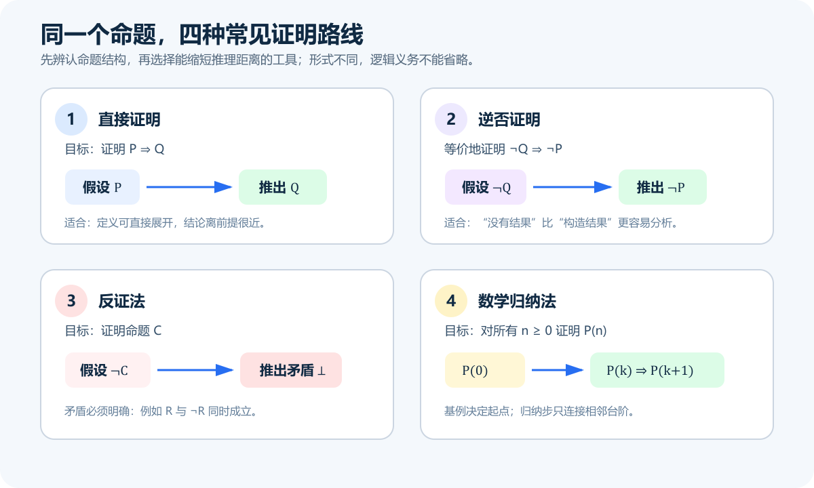
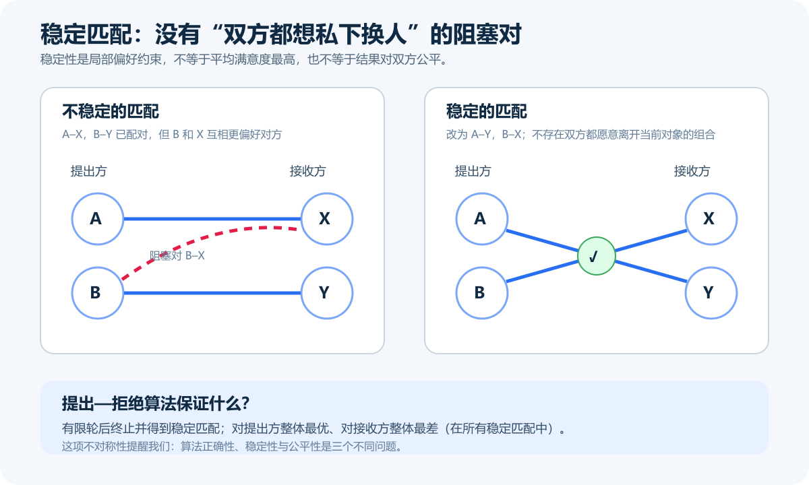
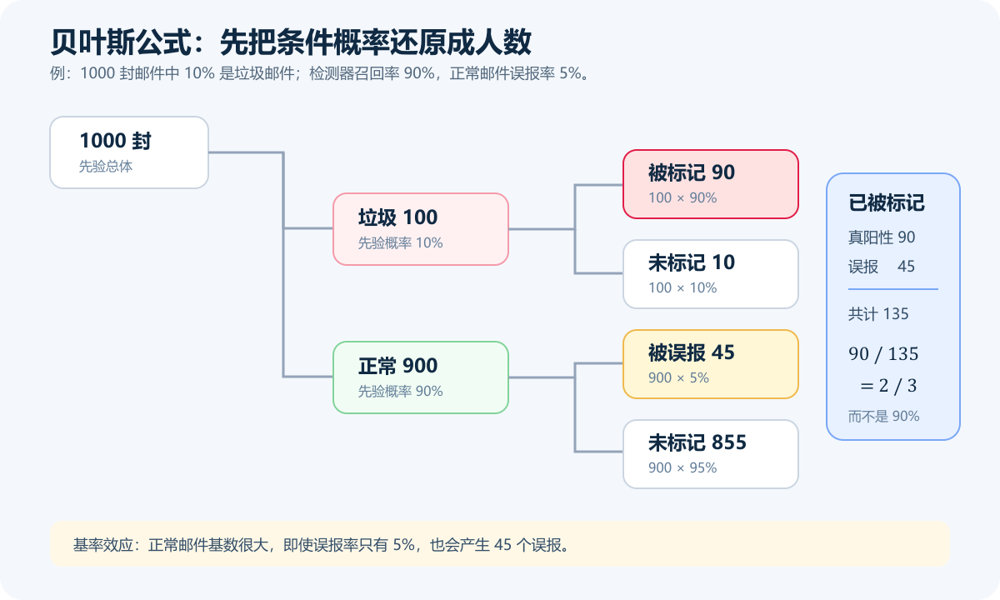

摘要
UC Berkeley CS70 的全名是 Discrete Mathematics and Probability Theory。把它翻译成“离散数学与概率论”没有错，却很容易让人误以为这是一门由定义、公式和计算题拼起来的数学基础课。课程真正训练的是两种互补的推理能力：面对确定性的命题，如何从定义和假设出发，写出任何读者都能逐步检查的证明；面对随机过程，如何先建立样本空间，再用条件概率、随机变量、期望、方差和集中界描述不确定性。前半程讨论“为什么一定成立”，后半程讨论“不能保证时，还能可靠地说什么”。
本文以 Berkeley 公开的 2026 课程概览和 Spring 2024 完整讲义为事实主线，并参考 B 站上的 CS70 2015 中英字幕、英文字幕及 Spring 2022 课堂视频。文章不按周次复述课程，而是围绕几条会反复出现的思想展开：证明为什么不是把直觉写长；归纳法为什么接近递归程序的正确性证明；模运算如何从“求余”上升为代数结构；稳定匹配为什么同时展示了算法、终止性、正确性与公平性的区别；贝叶斯公式为什么首先是样本空间的重新划分；线性期望为何常常比完整分布更有用。最终想说明的是，CS70 的价值不在于记住多少定理，而在于学会管理推理中的确定性、边界和不确定性。
关键词： CS70；离散数学；概率论；证明；归纳法；模运算；稳定匹配；贝叶斯公式
资料范围：截至 2026 年 10 月 12 日，Fall 2026 已开课并进入第七周，官网已给出完整主题顺序，但概率单元尚未实际讲授。本文用当前主页确认课程结构，具体定义与证明仍交叉参考资料完整的 Spring 2024 讲义。B 站视频用于辅助中文理解，不用来证明现行评分、作业或课程政策。本文也不包含任何在用作业答案。
引子：程序跑对了一百次，能证明它永远正确吗？
写程序时，我们很容易把“测试通过”当成“已经正确”。对有限输入运行一百次、一万次，当然能够增加信心，却仍然只观察了有限个样本。如果函数声称对任意长度的链表成立、算法声称在所有图上终止、协议声称任何参与者偏好下都不会出现阻塞组合，那么测试并不能覆盖那个无限集合。
反过来，很多现实算法又无法承诺每次都给出同样结果。哈希冲突、网络拥塞、随机抽样、负载均衡、机器学习预测，本来就包含不确定性。要求“绝不失败”可能代价高得不可接受；只说“平均不错”又可能隐藏尾部风险。此时我们需要的不是传统意义上的绝对证明，而是一套精确语言：事件是什么，概率对谁而言，期望代表什么，偏离均值有多可能。
CS70 刚好站在这两类问题的交界处。课程前半段教人把直觉压缩成可验证的逻辑链，后半段教人把随机性拆成可计算的模型。它看似从逻辑跳到数论，再跳到图和概率，底层却始终在问同一件事：你凭什么相信这个结论？
一、CS70 不是“给程序员补一门高数”
Berkeley 的官方课程目录将 CS70 概括为离散数学与概率论，主题包括逻辑、归纳、不可判定性、稳定匹配、模运算、最大公约数、密码学、多项式、纠错、样本空间、独立性、随机变量、大数定律、负载均衡和贝叶斯推断。它要求的是一定的数学成熟度与编程经验，而不是把微积分作为唯一前置条件。UC Berkeley Catalog：COMPSCI 70
这点很重要。很多人第一次遇到 CS70，会用“我高数好不好”预测自己能不能学会。这个前提并不充分。微积分擅长研究连续变化，CS70 的核心困难则常常是量词、定义、有限结构和随机模型。例如，“对所有整数 n”与“存在一个整数 n”只交换了两个量词，含义却完全不同；一个条件概率的分母选错，后面的代数再熟练也不会得到正确答案。
Fall 2026 的官方日程从直接证明、命题逻辑、归纳和模运算开始，随后进入密码学、图、稳定匹配、可数性与可计算性，并在后半学期转向计数、概率、期望、方差与马尔可夫链。CS70 Fall 2026 课程主页 这条顺序反映了课程的实际工作方式：课堂视频帮助建立图景，讲义给出精确定义和证明，习题才真正暴露理解中的缝隙。
因此，把 CS70 学成“公式收藏”通常会出现三个后果：
- 看到熟悉题型会套，条件稍变就不知道公式为何仍然适用；
- 会写结论，却不能解释每一步依赖了哪个定义或定理；
- 概率计算能做出数字，却没有检查随机实验、条件信息和独立性假设。
一个更准确的课程主线是：
离散数学负责把“必然”说清楚，概率论负责把“不确定”说清楚，而证明贯穿两者。
二、证明不是更正式的解释，而是一份可审计的程序
Berkeley 的证明讲义把 proof 描述为一串有限的逻辑推导，它要建立的是可能覆盖无限多个实例的命题。CS70 Note 2：Proofs 这个定义很像程序：输入是假设和已知定理，执行规则是合法推理，输出是目标结论。任何一步如果偷偷使用了尚未证明的结论，整条链就像程序读取了未初始化变量。
假设我们要证明：若整数 n² 为偶数，则 n 为偶数。直接从 n²=2k 推出 n=2m 并不自然；使用逆否命题却很短。逆否命题是：若 n 为奇数，则 n² 为奇数。令 n=2k+1，则
n² = (2k+1)² = 4k²+4k+1 = 2(2k²+2k)+1，
所以 n² 为奇数。原命题因此成立。关键不是“逆否法比较高级”，而是它把“从平方的性质恢复原数结构”的困难，转换成“把奇数结构向前传播”的简单任务。

图 1 中最容易被混淆的是逆否与反证。证明 P ⇒ Q 的逆否命题，是假设 ¬Q 后推出 ¬P；反证法则是否定整个待证结论，再推出明确矛盾。二者有时写出来相似，却不完全是一回事。另一个常见错误是把“没有找到反例”写成证明。有限搜索只能说明搜索范围内没有反例，除非还证明搜索范围覆盖了所有可能情况。
证明写作真正考查什么
好的证明不追求省略，而追求读者无需猜测。至少要回答四个问题：
- 变量属于什么集合，量词范围是什么？
- 使用了哪条定义或已知定理？
- 新对象为何存在，例如某个整数
k从何而来？ - 结论是否正好覆盖原命题，而不是一个相似但更弱的命题？
这也解释了为什么很多“我脑子里懂了”的证明拿到纸面上会断。直觉允许跨越几步，证明要求把桥真正搭出来。CS70 的批改看起来有时严格，并不是在奖励古板格式，而是在训练一个结论能否被他人独立复查。
三、归纳法：从无穷命题到一个可重复的接口
数学归纳法常被比喻成多米诺骨牌：推倒第一块，并保证每一块会推倒下一块，于是所有牌都会倒。这个比喻有帮助，但它容易掩盖两个最常见的漏洞。
第一，归纳起点必须与命题定义域一致。证明了 P(1) 和 P(k)⇒P(k+1)，不能自动覆盖从 0 开始的命题。第二，归纳假设只能在允许范围内使用。若要证明 P(k+1)，写到一半直接声称 P(k+1) 已成立，就是把结论伪装成假设。
以二叉树节点数为例。假设我们想证明：任意非空满二叉树中，叶子数 L 与内部节点数 I 满足 L=I+1。最自然的归纳变量不是树的高度公式，而是树的递归结构。
- 基例：只有一个叶子的树，
L=1、I=0，等式成立。 - 归纳步：根节点有两棵更小的满二叉子树。若对子树分别有
L₁=I₁+1、L₂=I₂+1，整棵树的叶子数为L₁+L₂，内部节点数为I₁+I₂+1。于是L₁+L₂=(I₁+I₂+1)+1。
这段证明与递归程序几乎同构：基例处理最小结构，递归分支假设子问题接口正确，再证明组合后的结构仍满足性质。于是归纳法不再只是考试技巧，而是递归算法、树算法和循环不变量背后的证明骨架。
强归纳法允许证明 P(n) 时使用所有更小实例 P(0)…P(n-1)。它并不比普通归纳法“更真”，只是归纳假设的接口更宽。例如证明每个大于 1 的整数都能分解为素数乘积时，n 若非素数，会分成两个都小于 n 的因子；强归纳恰好提供这两个因子的结论。
学习归纳法时，可以在每次动笔前写三行空格：命题 P(n)=____、基例 n=____、归纳假设=____。这看似机械，却能提前发现大量定义域错位和偷用结论的问题。
四、模运算：不是钟表小游戏，而是忽略整圈后的结构
很多人中学就会求余，因此进入模运算一章时容易低估难度。17 mod 5 = 2 只是计算；同余关系 a≡b (mod m) 表示 m 整除 a-b，它把无穷多个整数按余数分成有限个等价类。后续的加法、乘法、逆元、费马小定理、中国剩余定理和 RSA，都建立在这个关系上。
同余可以像等式一样做加法和乘法，但除法不能随意照搬。普通整数中，从 ac=bc 且 c≠0 可以约去 c；模 m 时，约分需要 c 在模 m 下可逆，也就是 gcd(c,m)=1。例如模 6 下 2×1≡2×4，但 1 并不同余于 4。若忽略逆元存在条件，形式上很像代数的推导会给出错误结论。
欧几里得算法不仅计算最大公约数，扩展形式还能找到整数 x,y，使 ax+by=gcd(a,b)。当 gcd(a,m)=1 时，这个等式直接给出 a 的模 m 逆元。这里出现了 CS70 的典型风格：一个看似纯数论的存在性命题，最终变成可执行算法。
中国剩余定理说，当模数两两互素时，一组余数条件会在模数乘积意义下确定唯一解。图 2 的例子中：
x ≡ 2 (mod 3)
x ≡ 3 (mod 5)
得到 x≡8 (mod 15)。这里的“唯一”并不是整数世界只有一个答案，而是所有答案 …, -7, 8, 23, 38, … 属于同一个模 15 等价类。这个限定若省略，定理就会被说错。
从数论到 RSA：数学正确不等于系统安全
RSA 的概念路线把模运算、欧拉函数、逆元和快速幂连在一起：公钥加密使用一个指数，私钥解密使用与之对应的逆指数；正确性依赖模算术中的指数关系。理解这条证明链，能看到“为什么能解密”并不是因为双方碰巧做了相反运算，而是密钥构造保证了它们在相应模结构中互逆。
但必须明确区分两个结论：课堂中的 RSA 数学可以证明加解密关系；现实系统的安全却还取决于随机数、密钥长度、填充方案、实现是否恒定时间、密钥保存和攻击模型。把“我会推 RSA 公式”扩张为“我能安全实现 RSA”，是危险的逻辑跳跃。密码学库存在的意义之一，就是避免每个应用开发者重复承担这些实现风险。
多项式、秘密分享和纠错码也体现了相似思想：若一个次数不超过 d 的多项式由 d+1 个合适点唯一确定，那么“数据”就能被表示为若干取值；增加冗余点后，即使部分点丢失或出错，也可能恢复原对象。课程不只是展示几个漂亮应用，而是在训练学习者辨认同一个数学结构如何在插值、共享秘密和通信可靠性中重复出现。
五、图与稳定匹配：算法输出了结果，还要证明结果是什么
图论把对象抽象成顶点，把关系抽象成边。道路、社交连接、依赖关系和通信网络的现实含义不同，到了图这一层却可以共用路径、连通性、树、环、度数等概念。这就是离散数学对计算机科学的重要贡献：它并不保留世界的全部细节，而是保留当前问题需要的结构。
稳定匹配问题则把算法证明的几个层次放到同一张桌上。假设两组参与者各自给出严格偏好，目标不是简单找任意一一匹配，而是避免出现一个“阻塞对”：两人彼此都更喜欢对方，而不是自己当前的匹配对象。如果存在阻塞对，当前安排就可能被私下偏离。

提出—拒绝算法（常称 Gale–Shapley 算法）的过程很像一套有状态协议：未匹配的提出方依次向尚未拒绝过自己的最高偏好对象提出；接收方暂时保留目前最喜欢的提议，拒绝其他人；被拒者继续向下一对象提出。要说它“正确”，至少需要分别证明：
- 终止性：每个提出方最多向每个接收方提出一次，有限次提议后过程停止；
- 完备性：在标准等人数、完整偏好假设下，停止时形成完整匹配；
- 稳定性：若声称某对会阻塞，根据提议顺序与接收方只会换到更优对象的性质，可以推出矛盾。
Spring 2024 官方讲义进一步证明，在所有稳定匹配中，提出方得到其可能的最佳稳定对象，而接收方得到其可能的最差稳定对象。CS70 Note 4：Stable Matching 这是一个经常被忽略的机制设计结论：同一个算法可以正确、终止并产生稳定结果，同时在两侧之间存在系统性不对称。
因此，“稳定”不能直接翻译成“公平”，“不存在阻塞对”也不能推出“总满意度最高”。现实分配还可能存在不完整偏好、人数不等、群体约束、策略性报告与动态变化。课堂模型的价值在于隔离一个核心机制，不在于宣称它已经完整代表招生、就业或婚恋市场。模型适用范围本身，也是证明的一部分。
六、可数性与不可计算性：有些问题不是机器再快一点就能解决
CS70 中最让人改变世界观的一段，常常不是概率，而是可数性、自指与停机问题。自然数和有理数看起来大小悬殊，却都可以按某种顺序枚举；实数则不能被自然数完整列出。Cantor 对角线论证的力量，在于它针对任何声称“已经列完”的清单，机械地构造一个不在清单中的对象。
这里要区分“无限”和“不可数”。集合无限，并不自动意味着它不能被程序逐个生成；可数集合仍可能无限。反过来，“可以描述某类对象”也不代表每个对象都有一个有限程序描述。程序是有限字符串，因此所有程序的集合至多可数，而实数不可数。这意味着绝大多数实数没有任何有限程序能精确生成。
停机问题进一步表明，不存在一个通用程序，能够对任意程序和输入都正确判断它是否最终停止。证明通过自指构造让假想判定器在自己的预测上产生矛盾。这个结论不是“当前计算机性能不够”，也不是“算法尚未被发现”，而是满足该规格的通用算法根本不存在。
对工程实践而言，它带来一种重要克制：遇到自动分析、程序验证或安全检测工具时，要问它承诺的是所有程序上的完备判断，还是受限语言、近似分析、允许误报/漏报或需要人工注释。不可计算性没有让工具失去价值，它只是迫使我们诚实说明工具牺牲了什么。
七、计数：先决定“什么算一个结果”，再排列组合
概率部分经常从计数开始，因为在有限且等可能的样本空间中，事件概率可以写成“有利结果数 / 总结果数”。真正困难往往不是计算阶乘，而是定义一个结果如何被唯一表示。
例如从 10 人中选 3 人组成小组，用组合数 C(10,3)；若还要指定组长、记录员和汇报人，则角色使顺序有意义，应使用排列。若先按顺序选出三人，再忘记除以 3!，每个无序小组就被重复计算了六次。很多计数错误本质上都是表示不唯一：同一对象被数了多次，或某些对象根本没有进入表示。
一个可靠的计数检查清单是：
- 这是选择还是排序，顺序是否产生不同结果？
- 对象是否可重复，是否有容量限制？
- 分情况是否互斥，合并时有没有重叠？
- 构造过程是否让每个目标对象恰好出现一次？
- 能否用很小的参数手工枚举，检查公式？
容斥原理处理的正是重叠。把两个集合大小直接相加，会重复计算交集，因此要减去一次；三个集合还要继续校正三重交集。它不是一条孤立公式，而是一种“先允许重复，再系统纠偏”的策略。后面的并合界（union bound）则换了目标：不求精确，只要一个易算的上界。CS70 很重视这种差异——有时精确值昂贵，而一个足够强的界已经能证明算法失败概率很小。
八、概率空间：随机性不是一句“看运气”
概率模型由样本空间、事件和概率规则组成。抛两枚硬币时，若硬币独立且公平，可以用 {HH, HT, TH, TT} 作为四个等可能基本结果。若只写“0 个、1 个、2 个正面”，这三个结果并不等可能，因为“1 个正面”包含 HT 和 TH 两种情况。
这类错误揭示了概率题的第一原则：等可能性是模型假设，不是看起来对称就自动成立。 抽牌不放回会改变后续分布，带偏硬币不会给每条序列相同概率，现实数据也常受采样机制影响。公式不能替代对随机实验的说明。
条件概率
P(A | B) = P(A ∩ B) / P(B)
表示已知 B 发生后，把样本空间缩小到 B，再看其中 A 所占比例。它不是在原概率上随意追加一个竖线。两个事件独立意味着 P(A∩B)=P(A)P(B)，等价地，在概率非零时知道 B 不改变 A 的概率。互斥却意味着它们不能同时发生；除非某事件概率为零，互斥事件通常恰恰不独立。
这是概率学习中最常见的概念混淆之一：日常语言里的“互不相关”，可能被错误地写成互斥，也可能被错误地写成独立。数学模型要求选一个明确含义。
九、贝叶斯公式：方向翻转之前，先看基率
贝叶斯公式把 P(B|A) 与 P(A|B) 联系起来：
P(A | B) = P(B | A) P(A) / P(B)
它经常被描述成“从结果反推原因”，但这句话若没有基率 P(A)，仍然可能误导。一个检测器对垃圾邮件的识别率很高，不等于所有被标记邮件几乎都是垃圾邮件；还必须知道垃圾邮件原本占多少，以及正常邮件被误报的概率。

图 4 假设 1000 封邮件中有 100 封垃圾邮件。检测器能标出其中 90%，得到 90 个真阳性；900 封正常邮件中有 5% 被误报，又产生 45 个假阳性。因此在所有 135 封被标记邮件中，真正垃圾邮件的比例是
P(垃圾 | 标记) = 90 / (90+45) = 2/3，
不是 90%。90% 回答的是“已知垃圾邮件，被标记的概率”，而问题问的是“已知被标记，属于垃圾邮件的概率”。把条件交换，数值一般不会保持不变。
Spring 2024 的条件概率讲义把贝叶斯公式与全概率公式放在一起：先把分母按若干互斥且完备的情况拆开，再完成方向转换。CS70 Note 14：Conditional Probability 在实际分析中，树状图或人数表往往比直接代公式更安全，因为它会迫使你把真阳性、假阳性、假阴性和真阴性全部摆出来。
贝叶斯推断也提醒我们，概率结论依赖先验和观测模型。不同先验不一定是“谁算错了”，可能代表掌握的信息不同；但先验不能被偷偷隐藏。尤其在医疗、风控和司法等高风险场景，样本代表性、群体基率、损失不对称和阈值选择都可能比公式本身更重要。
十、随机变量与期望：不要急着求完整分布
随机变量不是“会随机变化的变量”这么简单，而是从样本空间映射到数值的函数。抛三枚硬币的样本结果可以是一串 H/T，随机变量 X 则把每条序列映射为正面个数。把事件层和数值层分开，才能谈分布、期望和方差。
期望是按概率加权的平均值，但它不保证一次实验会取到那个值。一次公平六面骰的期望是 3.5，没有任何一次会掷出 3.5。期望描述重复实验或加权总体的中心，不是对单次结果的承诺。
CS70 中最实用的工具之一是期望的线性：
E[X₁ + X₂ + … + Xₙ] = E[X₁] + E[X₂] + … + E[Xₙ]。
它不要求这些随机变量独立。官方随机变量讲义明确强调了这一点，同时也提醒，乘积期望 E[XY]=E[X]E[Y] 一般需要更强条件，不能从线性类推。CS70 Note 15：Random Variables, Expectation
例如随机打乱 n 个不同元素，令指示变量 Iᵢ 表示第 i 个元素仍在原位。固定点总数 X=ΣIᵢ。每个元素留在原位的概率是 1/n，所以
E[X] = ΣE[Iᵢ] = n × (1/n) = 1。
我们没有枚举“恰好有 k 个固定点”的完整分布，也不必先证明这些事件独立——事实上它们并不独立。把复杂总量拆成指示变量，再利用线性期望，是概率算法分析里极具迁移性的技巧。
方差和集中界：平均值之外还有多大波动
两个方案期望成本相同，风险可能完全不同。方差衡量结果围绕均值的平方偏离，协方差描述两个变量共同变化的方向。若变量独立，求和方差可以相加；没有独立性时，还要考虑协方差项。把期望相加不需要独立，把方差相加通常需要，这个对比值得牢牢记住。
Markov、Chebyshev 和 Chernoff 类不等式进一步回答：随机变量偏离某个阈值的概率最多是多少。它们给的常常是上界而不是精确概率，但在算法设计中，上界已经足以证明“大规模情况下失败极少”。使用集中界时最危险的做法，是记住公式形状却忘记非负性、独立性或分布条件。每个漂亮指数界背后都有成本。
十一、马尔可夫链：下一步只看当前状态，但模型选择仍然决定结论
马尔可夫链用一组状态和转移概率描述随机过程。马尔可夫性质说，在给定当前状态后，下一步与更久历史条件独立。它不是说“现实真的没有记忆”，而是说我们选择的状态已经包含了预测下一步所需的信息。
天气的简化模型可以只有“晴、雨”两个状态，用转移矩阵描述晴天后下雨的概率、雨天后转晴的概率。连续乘转移矩阵可以得到多步分布；在适当条件下，分布会趋向稳态。类似模型可以用于网页随机游走、排队、文本生成和可靠性分析。
但如果状态定义得太粗，马尔可夫假设就会失真。把网络系统只分为“正常/故障”，可能遗漏负载、温度和故障持续时间；得到的稳态数字再精确，也只是粗模型的精确答案。概率模型最需要警惕的偏差之一，就是把“模型内可计算”误当成“现实中可信”。
这也是 CS70 后半程与前半程的呼应。证明要求清楚写出假设；概率建模同样要求清楚写出状态、转移和独立性。模型不是现实本身，而是一组带条件的命题。
十二、如何配合 B 站视频学习，而不是把视频当背景音
B 站确实能降低英文课堂的进入门槛，但搜索“CS70”会混在一起至少三类资源：完整旧学期录像、单讲搬运，以及机器生成中英字幕或中文配音。年份、字幕质量和分集完整度并不相同。更稳妥的顺序是先确定官方讲义主题，再用视频补直觉，最后回到题目验证。
1. 2015 中英字幕全集：适合先建立全景
UCB《离散数学和概率论｜CS70 2015》中英字幕收录了从证明、数论到概率的长课。优点是覆盖连续，中文检索方便；局限也很明确：2015 距今已久，主题顺序、符号、作业和课程政策都不能直接当作 2026 版本。字幕尤其是数学符号、专有名词和否定词，必须与官方讲义核对。
如果不喜欢机器双语字幕，也可以看英文字幕版 2015 CS70。它适合已经能阅读英文讲义、只需要课堂解释的人。不要为了“刷完 28 讲”牺牲做题；一讲听懂的标准不是进度条走完，而是关掉视频后能自己重建定义与关键证明。
2. Spring 2022 单讲录像：适合按薄弱点补课
B 站上有 Spring 2022 的单讲搬运，例如CS70 Spring 2022 Lecture 3。这类资源更适合从官方日程找到对应主题后定点观看，而不是依赖播放列表顺序。若只卡在归纳步、CRT 或条件概率，直接找对应一讲，再配套做两三道题，效率往往高于从第一讲重新播放。
3. 更新的 Fall 2025 中英字幕：内容接近，但仍要核验来源
B 站搜索结果中已经能看到题为“CS70 Fall 2025, Discrete Math and Probability”的中英字幕合集，分集包括命题逻辑、证明、归纳、稳定匹配、图、模运算、RSA、计数、条件概率、期望、方差、集中界与马尔可夫链。B 站 CS70 搜索页 它的主题顺序更接近近年课程，是更方便的中文入口；不过上传者可能把重复片段、补充视频或机器字幕混在同一合集里。学习时应以官方讲义标题和定义为准，不能因为年份新就默认字幕准确。
一套更实际的观看流程
我更推荐“讲义—视频—白纸—题目”的四步循环：
- 先浏览讲义标题、定义和例题，标出看不懂的句子；
- 带着这些问题观看对应视频，必要时只看相关时间段；
- 关掉材料，在白纸上写出定义、定理条件与证明骨架；
- 做一道基础题和一道变式题，错误单独记成“我错误使用了什么假设”。
这个流程比“视频看两遍”更费力，却更像真实学习。数学理解并不发生在信息进入耳朵时，而发生在你尝试独立重建、发现缺口并修补缺口时。
十三、一条可执行的 CS70 自学路线
第一阶段：逻辑与证明语言
先掌握命题、量词、集合、函数、直接证明、逆否、反证和归纳。这个阶段不要追求难题数量，重点是每道题写完整：变量范围、假设、推导和结论。可以给自己的证明做“编译检查”：有没有未定义符号，有没有跳步，有没有把要证的结论当成已知。
第二阶段：离散结构与算法证明
学习图、稳定匹配、模运算、欧几里得算法、CRT、多项式、秘密分享与纠错。每个算法都分别问终止性、正确性和复杂度。对每个定理都问条件是否必要：模数不互素时 CRT 会怎样；偏好不完整时稳定匹配模型如何改变；输入有限性在哪里被使用。
第三阶段：可数性、计数与计算边界
把 bijection（双射）当作比较集合大小的主要工具，练习对角线构造和归约思维。计数题则坚持先写对象表示，再用乘法、加法、排列组合或容斥。若公式超过一行，用小规模手工枚举检查。
第四阶段：概率模型
每道题先写样本空间、事件、条件和是否独立，再做代数。遇到 Bayes 题优先画树或换算成 1000 个样本；遇到期望题优先寻找指示变量；遇到方差与集中界先核对条件。这样形成的习惯比背一页公式表更稳定。
第五阶段：混合训练与复盘
CS70 后期真正困难的题，经常需要把前面工具组合起来：先计数得到概率，再用期望或界；先定义图结构，再用归纳证明；先构造随机变量，再分析算法。复盘时不要只记正确解法，还要记录错误类型，例如“把互斥当独立”“忘了基例”“约去了不可逆元素”“证明了充分性却没证明必要性”。错误分类会逐渐成为自己的检查器。
十四、学习中容易被忽略的变量、成本与偏差
1. 英语成本不等于数学成本
看不懂讲义可能同时包含术语障碍和推理障碍。中文字幕能缓解前者，却可能掩盖后者。把定义翻译成中文后仍不能自己举例与反例，说明问题不在英语。相反，关键术语最好保留英文对应，如 contrapositive、invariant、sample space、independence，方便回查原讲义。
2. “看懂证明”与“能写证明”是两种能力
阅读时每一步都显得合理，不代表从空白页能找到路线。主动回忆、限时独立写作和接受反馈的成本不可省。视频带来的流畅感容易制造熟悉性偏差：因为见过，所以误以为会做。
3. 旧课资源的稳定内容与变化内容要分开
逻辑等价、CRT、Bayes 公式不会因为学期更换而失效；讲次顺序、作业编号、评分政策、软件平台和学术诚信规定却会变化。本文采用旧讲义解释稳定知识，并明确不把旧视频当作当前政策来源。自学者若参加正式课程，仍应以自己学期主页为准。
4. 数学模型总会省略现实变量
稳定匹配的标准模型省略策略、群体公平和动态到达；垃圾邮件例子假设检测性能与样本基率已知且稳定；马尔可夫链假设当前状态足以概括历史。模型并非因此“没用”，但结论只能在假设范围内成立。把模型结论搬到现实前，必须做一次缺失变量检查。
5. 期望不能单独代表风险
平均运行时间、平均收益和平均错误率都可能隐藏长尾。看到期望时，应继续问方差、分位数、最坏情况和失败代价。一个概率很小的事件，若损失巨大，仍可能是设计中的主导因素。
6. AI 与现成解答会改变练习的测量对象
直接让工具生成完整证明，得到的是一份可读文本，不是自己能否构造证明的证据。AI 更适合在独立尝试后扮演检查者：指出量词、边界条件和未证明跳步，再由学习者重写。否则练习测量的只是复制与辨认能力。
结语：CS70 教的，是结论应该被相信到什么程度
CS61A 让人理解程序如何解释，CS61B 让人理解数据结构如何承载操作，CS61C 让人追踪代码如何穿过机器；CS70 则给这些课程补上一套判断结论可靠性的语言。递归函数为何正确，需要归纳；图算法为何终止，需要有限性与不变量；密码协议为何能恢复信息，需要模运算与多项式；随机算法为何大概率有效，需要期望、方差和集中界。
学完 CS70 之后，最理想的变化不是能快速说出更多定理名称，而是遇到结论时会本能地追问：命题的量词是什么？证明使用了哪些假设？反例在哪里？概率相对于哪个样本空间？独立性真的成立吗？这是期望还是高概率保证？模型忽略了什么？
确定性世界里，证明告诉我们结论为何必然成立；不确定性世界里，概率告诉我们结论能被相信到什么程度。能在两者之间清楚切换，才是 CS70 留给计算机科学学习者最持久的能力。
参考资料
- UC Berkeley Catalog：COMPSCI 70
- CS70 Fall 2026 课程主页
- CS70 Spring 2024 完整课程归档
- CS70 Note 2：Proofs
- CS70 Note 4：Stable Matching
- CS70 Note 6：Modular Arithmetic
- CS70 Note 13：Probability Foundations
- CS70 Note 14：Conditional Probability
- CS70 Note 15：Random Variables and Expectation
- B 站：UCB CS70 2015 中英字幕
- B 站：UCB CS70 2015 英文字幕
- B 站：CS70 Spring 2022 Lecture 3
图片说明：本文四张技术示意图均为配合文章重新绘制的原创图，不是课程课件截图。转载文章时可连同
cs70-assets目录一并发布。